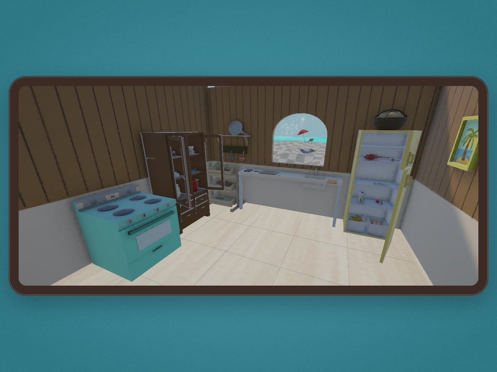

Jugar
Jugar
La receta de Jerome
Acompaña a Jerome en un juego interactivo para reunir los ingredientes de una receta tradicional isleña y aprender de ella.
Jugar
Acompaña a Jerome en un juego interactivo para reunir los ingredientes de una receta tradicional isleña y aprender de ella.

Ver videoCocina en primera persona: prepara paso a paso una receta tradicional isleña y descubre los secretos que guarda el fogón.
Escanea el código QR de esta tarjeta y apunta tu celular a las polaroids: verás cómo cobran vida y se mueven ante tus ojos.
 Ver video
Ver video
Jerome recuerda su infancia junto a su abuela y nos muestra los rituales de su cocina y por qué vale la pena conservarlos.